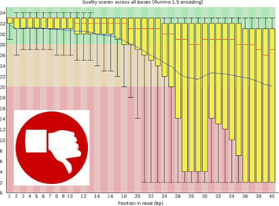
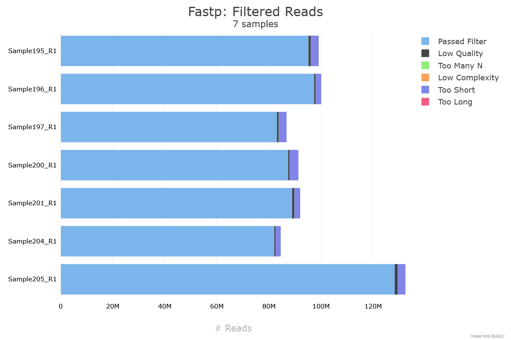

Introduction to De novo Genome Assembly
Genome assembly is a fundamental process in genomics that aims to reconstruct
the complete sequence of an organism's DNA from raw sequencing reads. Modern sequencing
technologies do not produce entire chromosomes in a single piece; instead, they generate
millions of short or long DNA fragments that must be computationally reassembled.
There are two major strategies for genome reconstruction:
-
Reference-guided assembly (resequencing)
Reads are aligned against a previously characterized genome. While efficient, this strategy inherently introduces reference
bias and may mask novel regions absent from the reference.
-
De novo assembly
The genome is inferred exclusively from sequencing data, without relying on any
pre-existing reference sequence. Similar to assembling a puzzle without the image on the box,
this approach requires sophisticated algorithms to determine how fragments overlap and fit
together. De novo assembly is indispensable when working with non-model organisms, highly
variable genomes, or species lacking well-curated references.
Why perform De novo Assembly?
A de novo approach is the method of choice when:
- No reference genome exists for the organism of interest.
- New sequencing technologies provide higher accuracy or read lengths compared to legacy data.
- The use of an existing reference may hinder the detection of biologically relevant
variants, especially complex structural rearrangements.
- Researchers aim to obtain a complete, unbiased genomic representation for annotation,
comparative genomic studies, or genetic engineering initiatives.
Step 1: Data Quality Control
Raw FASTQ files are evaluated with FastQC and summarized using
MultiQC. We detect GC biases, adapter contamination, duplicated reads, per-base quality
and other quality issues to ensure the dataset is suitable for assembly.


View FastQC Report
View MultiQC Report
Step 2: Trimming
Trimming is an essential step to ensure that only high-quality reads are used in the downstream analysis. During this process, we remove adapter sequences, low-quality bases, and any technical artifacts introduced during sequencing.
We use tools such as Trimmomatic or fastp, which automatically detect adapters, trim poor-quality regions, and filter out unreliable reads.


Step 3: De novo Assembly
Reads are assembled into contigs based on sequence overlap or de Bruijn graph models. The goal is to reconstruct the genome with the highest continuity and lowest fragmentation.
3.1 Genome Assembly
Assembly tools vary depending on sequencing technology:
- SPAdes — standard for Illumina short reads
- Unicycler — hybrid assembler (short + long reads, ideal for bacterial genomes)
- Flye — optimized for ONT or PacBio long reads
These tools build contigs by identifying overlaps and resolving genomic structure, repeats, and coverage patterns.
3.2 Gap Closing
If the assembly contains gaps, software such as GapCloser or GapFiller uses paired reads to bridge contigs and improve continuity.
3.3 Assembly Polishing
Assemblies derived from long reads may contain indel errors. Tools like Aramis, Pilon, or Racon use high-accuracy short reads to correct base-level errors and produce a refined genome.
Step 4: Assembly Validation and Assessment
A genome assembly must be evaluated to determine its quality, accuracy, and completeness. We assess both structural integrity and biological representation.
- QUAST — measures assembly metrics (N50, contigs, genome size, GC %).
- Coverage visualization — ensures uniform sequencing depth.
- Dot plots — detect structural rearrangements; visualized using Gepard.
- Annotation completeness — evaluated with BUSCO, which searches for conserved orthologous genes.
These steps confirm whether the assembly is reliable for downstream analyses such as comparative genomics, variant calling, or gene annotation.